Galletas exprés: cómo hacer galletas fáciles y rápidas
Thu, 24 Nov 2011 08:30:32 +0000
He pensado que ahora que nos vamos conociendo, cualquier día de estos os presentáis a tomar un café a casa. Así que mejor que sepáis lo que os podéis encontrar… Cuando llaméis al timbre, oiréis que por el pasillo se acerca lo siguiente: - Cuatro patas al trote cochinero, acompañadas de varios “worf, worf”. Este [...]
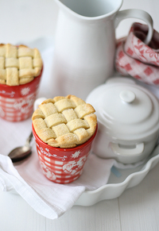
He pensado que ahora que nos vamos conociendo, cualquier día de estos os presentáis a tomar un café a casa. Así que mejor que sepáis lo que os podéis encontrar…
Cuando llaméis al timbre, oiréis que por el pasillo se acerca lo siguiente:
- Cuatro patas al trote cochinero, acompañadas de varios “worf, worf”. Este es el perro, Perry Mason. Tranquilos, no muerde.
- Dos piernecitas a la carrera detrás del perro, y una vocecilla que grita (mientras se parte de risa): “guau,guau”. Este es Pablo, mi hijo mayor (3 años). Tranquilos, tampoco muerde.
- Una voz gruñona que grita desde detrás: “Tol mundo quieto!” Esa soy yo.
No pasa nada por sentir miedo. Aquí es cuando la mayoría de los mensajeros tiran el paquete y salen corriendo.
Entonces se abrirá la puerta, y saldrá un niño de un año, redondo y rubito, que independientemente de vuestra edad, sexo o color, gritará: “buelo, buelo!” todo emocionado dando saltitos.
Aquí es cuando el resto de los mensajeros tiran el paquete y salen corriendo.
Este es Jorge, y sí que muerde. La buena noticia es que está vacunado, y todavía no tiene todos los dientes.
Si a pesar de este recibimiento, os decidís a entrar en casa con la esperanza de degustar alguna tarta, bollos o galletas de los que soléis ver por aquí… desengañaos. Cuando viene visita sorpresa, por la ley gastronómica de Murphy, nunca tengo nada preparado. Y claro, entonces os enfadaréis más que las señoritas de Avignon cuando vieron el retrato que les había hecho Picasso. Y para evitar esto, me gusta tener en mi repertorio recetas fáciles y rápidas, como la tortilla fea de chocolate, o estas galletas exprés que os traigo hoy: están listas en 15 minutos, y puedo ir preparándolas justo en el tiempo que tarda la Thermomix en preparar un chocolate caliente delicioso. Espero que os gusten! Y si venís de visita, ya sabéis… avisad antes!
—————————————————————————————————————————————————————————
Ya tenemos las primeras galletas exprés! A Eva de Comer y Rascar le han quedado así de bien, aunque señala que tardó más de 15 minutos. Las segundas con forma de flor son de María Cardona (@mmcardona) Anna de Mis comienzos en la cocina, que usó también anís para algunas de ellas. Loreto Barahona (@loretobarahona) las ha preparado perfectas, como podéis ver en la cuarta foto. Por último, Marta Albiol ha publicado también esta receta en su blog, podéis encontrar allí una versión en catalán
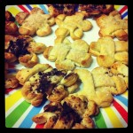") 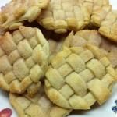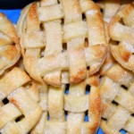
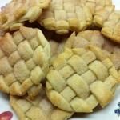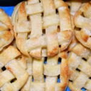
Podéis pinchar sobre las imágenes para verlas a tamaño completo. Pasando el ratón por encima de las fotos, podéis ver quién es el autor.
—————————————————————————————————————————————————————————–
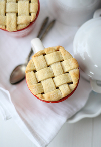
{Galletas exprés}
Descripción: Galletas de masa quebrada o pasta brisa, con azúcar y especias, según esta receta
Preparación: 5 min
Cocción: 10 min
Raciones: 3 galletas
Valoración 5 sobre 1
Dificultad: para personas que piensan que reflexionar es hacer varias flexiones
Ingredientes
- 1 lámina de masa quebrada, o pasta brisa
- 1 cucharada colmada de azúcar aromatizado con vainilla o canela. Si no tienes, usa azúcar normal y canela molida
- 1 cucharada de mantequilla fundida
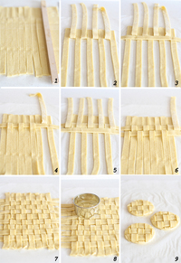
Preparación
- Precalentamos el horno a 200ºC
- Extendemos la lámina de masa quebrada sobre el mismo papel vegetal que viene con el envase
- Cortamos la masa en tiras usando un cuchillo afilado. Yo utilicé una tabla de madera como guía
- Elaboramos el enrejado tal y como se ve en las imágenes: vamos levantando tiras alternas, colocamos una tira perpendicular, bajamos las tiras que habíamos subido, y subimos las que se quedaron abajo. Es más complicado explicarlo que hacerlo, de verdad
- Cortamos las galletas con un cortapastas redondo, de diámetro ligeramente superior al de las tazas. No por capricho, oye, solo por aquello de que la galleta se sujete en el borde de la taza
- Retiramos la masa sobrante, procurando no mover las galletas (La masa que sobra puede amasarse y volverse a estirar para hacer más galletas)
- Barnizamos las galletas con mantequilla fundida, y las espolvoreamos con azúcar aromatizado con canela o vainilla. Sed generosos con el azúcar, será lo único que aporte dulzor a las galletas.
- Colocamos las galletas con el papel vegetal sobre una bandeja de horno.
- Horneamos 10 minutos a 200ºC, hasta que estén ligeramente doradas.
- Apagamos el horno, que nos conocemos y alguno lo tiene encendido desde que empecé con el blog
- Servimos sobre tazas de chocolate caliente.
Variaciones
Para aromatizar el azúcar con vainilla o canela, basta con poner una rama de canela, o una vaina de vainilla en un recipiente hermético lleno de azúcar
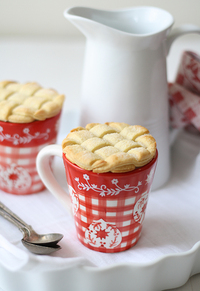
{Lattice cookies}
Summary: Lattice Pie Crust Cookie Toppers Recipe, after this recipe
Ingredients
- 1 sheet dough for pie crust
- 1 tablespoon vanilla or cinnamon sugar
- 1 tablespoon butter, melted
Directions
- Preheat oven to 400º F
- Roll out dough
- Using a sharp knife slice the dough as shown on the pictures above
- Create lattice pattern with strips of dough
- Cut out rounds slightly larger than mug
- Brush tops with melted butter, and sprinkle with sugar
- Bake for 10 minutes until golden brown
Preparation time: 5 minute(s)
Cooking time: 10 minute(s)
Number of servings (yield): 3 cookie toppers
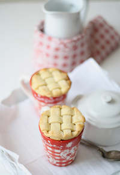
Brownie: por fin llegó el día del brownie !
Fri, 11 Nov 2011 05:00:45 +0000
{Please scroll down for recipe in English} No hace falta que os diga que me gusta bromear. Ya os conté las bromas que les gastábamos a los porteros en la residencia universitaria. Allí también hacíamos otra travesura con los servilleteros, esos que son de plástico rojo y vas sacando unas servilletas de papel transparente que [...]

{Please scroll down for recipe in English}
No hace falta que os diga que me gusta bromear. Ya os conté las bromas que les gastábamos a los porteros en la residencia universitaria. Allí también hacíamos otra travesura con los servilleteros, esos que son de plástico rojo y vas sacando unas servilletas de papel transparente que ni limpian ni nada… Pues los desmontábamos y escribíamos mensajes en las servilletas: “Te estamos vigilando”, “Sabemos lo que hiciste”, y cosas así… Luego volvíamos a montar los servilleteros, y nos sentábamos a jugar al mus y a esperar a las “víctimas”… Era un poema ver las caras de la gente cuando sacaba las servilletas con mensaje! También debéis saber que si me invitáis a vuestra casa y me ofrecéis bombones, caramelos o similares, primero, es probable que me coma varios o muchos, y segundo, con los papeles de los que me coma, haré una pelotita que envolveré muy bien dentro de otro envoltorio, para que parezca un caramelo/bombón sin abrir, y la dejaré allí, en vuestra casa, escondida entre el resto de los bombones/caramelos… Y me reiré a menudo pensando en lo que pensará/hará la persona que encuentre el caramelo falso. Y lo que le responderá el anfitrión en esa situación… Siempre he soñado con que Isabel Preysler me invite a su casa y me saque los Ferrero Rocher… Soy mala, lo sé!
Así que la idea de presentar un huevo con su cáscara como postre, para que todo el mundo piense en plan Sara Montiel: “pero qué invento es este?” , me pareció irresistible. Y ver sus caras cuando al retirar la cáscara aparece un delicioso brownie de chocolate es de lo más divertido! Creo que una idea genial para el día de los inocentes, o para decorar el árbol de manera distinta, ya que se pueden pintar las cáscaras de los huevos, por ejemplo en rojo como los números de nuestras cuentas corrientes después de Navidad. O dejarlas en blanco, como se quedan nuestros gobernantes cuando buscan soluciones a la crisis.
Como muchas de las ideas que se me ocurren, resulta que ya se le había ocurrido a alguien antes, y al hacer una búsqueda en google encontré muchos ejemplos de bizcochos horneados en cáscara de huevo. No sé de dónde viene la idea original, así que os dejaré el post que yo he usado como referencia.
He preparado este brownie para el evento tuitero #eldiadelbrownie, podéis encontrar toda la info en este post de Dani, el Monstruo de las Galletas Al final de la receta, váis a encontrar una versión alternativa sin gluten que ha preparado Victoria García. Victoria es periodista de profesión, y hada madrina de vocación. Me anima, me apoya, me escucha, me riñe cuando lo necesito, y de vez en cuando me regala un vestido para ir al baile. Es la generosidad personificada. Y sabe mucho de brownies! Así que nos os perdáis su versión más abajo.
………………………………………………………………………………………………………………………………………………………
………………………………………………………………………………………………………………………………………………………
Ya habéis empezado a animaros a probar los webrownies!!! Pasad el ratón sobre la foto para ver el autor, y pinchad sobre las imágenes para verlas a tamaño completo.
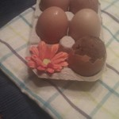 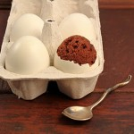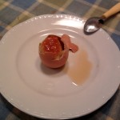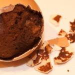
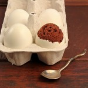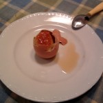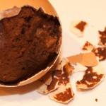
Links:
Liz Berg from Thatskinnychickcanbake
Chemistry and cloth
………………………………………………………………………………………………………………………………………………………
………………………………………………………………………………………………………………………………………………………
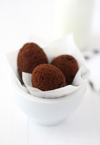
{Brownie}
Descripción: Brownie de chocolate horneado en cáscaras de huevo. He seguido las indicaciones que se dan en este blog
Preparación: 40 min
Cocción: 20 min
Raciones: 12-16
Dificultad: Si tienes huevos, puedes hacerla 
Valoración 5 sobre 1
Ingredientes
- 12-16 cáscaras de huevo, mejor si son XL, o un molde rectangular pequeño
- 200 gr de chocolate para fundir
- 125 gr de mantequilla a temperatura ambiente
- 3 huevos grandes
- 200 gr azúcar
- 125 gr de harina
- 3 cucharadas de cacao puro en polvo (tipo Valor)
- 1 pizca de sal
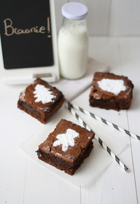
Preparación
- Vamos a comenzar preparando las cáscaras de huevo, que vamos a usar como molde para hornear
- Con la punta de un sacacorchos, pinchamos la parte inferior de la cáscara de huevo, y con los dedos rompemos con cuidado para hacer un agujero pequeño, al menos del grosor de un dedo meñique, por donde vaciaremos el huevo, e introduciremos la masa después. Es fácil, no se me rompió ninguno!
- Vaciamos el huevo, que reservamos para otras preparaciones, y aclaramos con agua la cáscara del huevo bajo el grifo. Para este paso de vaciar la cáscara, lo mejor es ayudarse de una brocheta de madera, así se vacía perfectamente y no quedan restos de huevo en el interior.
- Procedemos así con todas las cáscaras.
- Llenamos un bol amplio con agua salada (100 gr por litro aproximadamente). Introducimos las cáscaras de huevo en el agua, donde las dejaremos, con cuidado de que queden totalmente cubiertas por el agua, por espacio de media hora. Puede parecer obvio, pero las personas con cabeza de ajo como yo, necesitamos que nos aclaren que para que las cáscaras no floten en el agua, hay que llenarlas de agua de manera que salga todo el aire de su interior.
- Pasado ese tiempo, sacamos las cáscaras de huevo, y las dejamos secar con el agujero hacia abajo sobre papel de cocina.
- Con ayuda de un embudo pequeño, vertemos un poco de aceite en el interior de cada cáscara, y la giramos y movemos para que se impregne bien de aceite por dentro. Dejamos salir el aceite sobrante, y ya tenemos las cáscaras listas para rellenar con nuestro bizcocho favorito!
- Seguimos preparando nuestro brownie de chocolate.
- En un bol ponemos la mantequilla y la fundimos en el microondas, uno 45-60 segundos.
- Agregamos el chocolate troceado a la mantequilla fundida caliente, y dejamos reposar un poco para que se vaya deshaciendo el chocolate. Removemos la mezcla hasta que el chocolate esté totalmente disuelto, si es necesario, ponemos unos segundos más en el microondas.
- En otro bol (lo sé, ya no te quedan más verdad? pues a fregar), batimos los huevos con el azúcar, hasta que esté bien disuelto, pero sin llegar a montarlo (a mano, o con varillas eléctricas a velocidad baja-media).
- Mezclamos el chocolate y la mantequilla, que no deberán estar calientes, solo templados, con los huevos y el azúcar.
- Agregamos la harina, el cacao y la sal, y batimos unos segundos más a velocidad baja, lo justo para mezclarlo.
- Pasamos la mezcla a una manga pastelera con boquilla del tamaño adecuado a los agujeros de nuestros huevos. Puede hacerse con una bolsa de congelación cortándole la puntita, pero es más sencillo con boquilla y se mancha menos.
- Rellenamos cada cáscara de huevo hasta 3/4 partes. Si vais a usar cualquier otra receta de bizcocho que lleve levadura, os recomendaría rellenarlo solo hasta 1/2 de su capacidad. De todas formas, para que el brownie o bizcocho quede bonito, lo mejor es que la masa sobresalga de la cáscara, de esta manera nos aseguramos de que el brownie rellena toda la cáscara y sale con forma de huevo.
- Para hornear los huevos de brownie, precalentamos el horno a 180º C. Colocamos los huevos sobre un molde de magdalenas o muffins con un poco de papel de aluminio, para que los huevos se sostengan erguidos en el horno y no se salga el relleno.
- Horneamos los huevos de brownie entre 15 y 20 minutos.
- Sacamos del horno, retiramos el exceso de masa y limpiamos los restos de la cáscara con un paño húmedo. Ojo que si lo dejamos enfriar luego ya es mucho más complicado retirar los restos..
- Dejamos enfriar los huevos totalmente antes de servir.
- Servimos con el agujero hacia abajo, como si fuese un huevo pasado por agua. Y a ver qué cara pone la gente!
NOTA: la versión tradicional del brownie la he preparado en un molde desechable de aluminio, rectangular, pequeño, porque me gusta que queden gorditos. Lo he decorado con azúcar glass usando las plantillas que regalan cuando compras el chocolate Nestlé postres. Por fin les he encontrado utilidad!
………………………………………………………………………………………………………………………………………………………
………………………………………………………………………………………………………………………………………………………
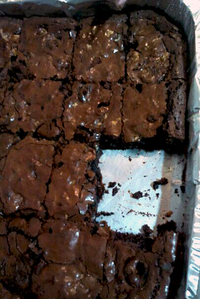
{Brownie sin gluten}
de Victoria García
Ingredientes: 4 huevos, 170 gr de azúcar moreno, 100 gr de mantequilla, 300 gr de chocolate negro, dos cucharadas de cacao puro en polvo. Para encontrar tropezones en la masa, Victoria sugiere: nueces, almendras, nubes, galletas…
Preparación: Precalentamos el horno a 180º C y preparamos un molde rectangular desechable de aluminio. Batimos los huevos a temperatura ambiente con el azúcar (unos 3 minutos). Derretimos la mantequilla, y agregamos el chocolate en trocitos. Con una cuchara de madera removemos hasta que se disuelva el chocolate. Cuando esté disuelto, unimos las dos mezclas, removemos y agregamos el cacao. Una vez esté bien mezclado, ponemos las nueces (o lo que queramos). Vertemos la masa en el molde, y horneamos unos 25-30 minutos.
………………………………………………………………………………………………………………………………………………………
………………………………………………………………………………………………………………………………………………………
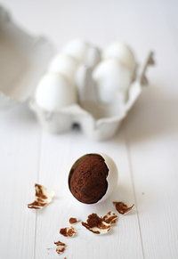
{Egg shell brownie}
Summary: Brownies cooked inside an egg shell, after the indications on this post
Ingredients
- 12-16 eggs for the shell (or an 8 inch pan if you want to bake a classic brownie)
- 7 oz bittersweet chocolate, chopped (200 g)
- 1 stick butter, room temperature (125 g)
- 3 large eggs
- 1 cup granulated sugar
- 1 pinch of salt
- 1 cup all-purpose flour
- 3 Tbls unsweetened cocoa powder
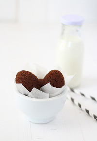
Directions
- To prepare the egg shells, carefully poke a small hole at the bottom of each egg, using a corkscrew bottle opener.
- Once you have poked a tiny hole, peel back the edges of the hole to expand it a bit. The holes need to be large enough to fit the tip of a piping bag inside.
- Turn the egg upside-down and dump out the contents, which you can store for other preparations I used a wooden skewer to help get all of the egg out of the shell.
- Rinse the insides of the eggs out thoroughly over the sink. Then, immerse them in saltwater for thirty minutes (100 g salt for every 1 liter water). Eggs need to be filled with the saltwater in order to sink.
- Rinse the egg shells in cold water and lay the eggs hole side down on a paper towel to dry.
- Drizzle about 1 teaspoon of sunflower oil in each egg and turn/flip it in your hand until the inside is completely covered. Get rid of any excessive oil. The easiest way to pour de oil inside the egg shell is to use a small funnel.
- Prepare the brownie batter.
- Put the chocolate and butter in a medium heatproof bowl and set over a pan of simmering water, or melt in the microwave Melt the chocolate and butter, stirring occasionally until smooth. Remove from heat and set aside to cool.
- In another medium bowl whisk together the eggs and sugar at low-medium speed until combined.
- Whisk the warm chocolate mixture into the egg mixture.
- Stir in the flour, salt and cocoa powder with a wooden spoon until just combined.
- Place the prepared egg shells into a cupcake tin. Use aluminum foil to help them stand upright.
- Load the batter into a piping bag fitted with a round tip. Make sure that the tip can fit the egg hole. If it can’t, expand the hole a little bit at a time until it fits. Fill your eggs about 3/4 full with batter. This is the tricky part. If you underfill the eggs, you won’t have a complete cake egg inside when you crack them after baking. If you overfill the eggs, cake will overflow out of the egg during baking. It looks ugly right after baking, but just remove
- the excess cake and clean the shell with a damp towel. It is important to do this when the cake is still hot, when cold it is much harder to clean the shell.
- Bake the eggs at 350º F for 15-20 minutes. Let cool, crack, and eat!
Preparation time: 40 minute(s)
Cooking time: 20 minute(s)
Number of servings (yield): 12-16
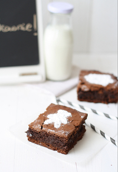
Pan casero : cómo hacer pan casero con forma de osito
Fri, 04 Nov 2011 08:44:05 +0000
Acabó Halloween, y según las estaciones comerciales del año, llega la Navidad. Los anuncios, los turrones, y los villancicos. Personas adultas y formadas cantaremos letras tan profundas como: fun, fun, fun, y rin, rin con total impunidad. Y es que las letras de algunos villancicos son… Por ejemplo el de los peces en el río. [...]
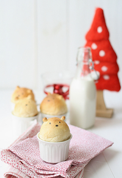
Acabó Halloween, y según las estaciones comerciales del año, llega la Navidad. Los anuncios, los turrones, y los villancicos. Personas adultas y formadas cantaremos letras tan profundas como: fun, fun, fun, y rin, rin con total impunidad. Y es que las letras de algunos villancicos son…
Por ejemplo el de los peces en el río. Beben y beben y vuelven a beber, los peces en el río, por ver a Dios nacer… El que seguro que había bebido fue el que se inventó la letra:
- Primero, peces que beben.
- Segundo, qué es lo que beben estos peces? porque si beben, y beben, y vuelven a beber… quiere eso decir que són alcohólicos???
- Por último, pero no menos importante… beben, y beben, y vuelven a beber…. por ver a Dios nacer!!!!
Queda claro que beben hasta sufrir alucinaciones. No pienso enseñarles este villancico a mis hijos.
Anda que el de campana sobre campana… Campana sobre campana, y sobre campana una. Asómate a la ventana, verás al Niño en la cuna… (vamos bien) Campana sobre campana, y sobre campana dos. Asómate a la ventana, verás al niño de Dios. (vale) Pero es que luego dice: Campana sobre campana y sobre campana tres. Asómate a la ventana, verás al Niño nacer. (Jolín, entonces, quién era el niño que estaba en la cuna en la primera campanada? fue un parto múltiple??). Y aquí se acaba el villancico, miedo me da pensar qué rima habrían hecho con la campanada cinco.
Y el de: “yo me remendaba, yo me remendé, yo me eché un remiendo, yo me lo quité?” Toma ya! Alma de cántaro, si te lo vas a quitar, para qué te pones a hacerlo? Porque si hay que ir se va, pero ir “pa ná”…Jolín, que hace que la letra del “Xu xu xu xa xa xa” parezca profunda… y eleva a la categoría de poesía el “No hay marcha en Nueva York / Y los jamones son de York” de Mecano.
Y qué me decís del pobre San José, que es el pringado de toda la historia… Primero, el papelón que le tocó desempeñar. “No, el niño no es mío. Es el Hijo de Dios”. Y qué obsesión con sus calzones en los villancicos! Que si se los comen los ratones, que si se los llevan los ladrones… Pobre hombre, dejadle la ropa interior en paz, que bastante tiene con lo suyo! Normal que se diera a la bebida (como los peces) y cantara aquello de: “esta noche es Nochebuena y mañana Navidad, saca la bota María, que me voy a emborrachar!” Qué espectáculo, borracho y sin calzones! Todos los caganets escandalizados…
Yo os dejo ya con esta idea para Navidad, o para cuando queráis. Está hecha con la receta de pan casero que ya os ensené con el pan de leche decorado con cilantro. Lo mejor de hacer pan en casa, es que te da mucho juego, ya que las posibilidades son infinitas. En este caso, he preparado unos panes para los más peques. Podéis rellenarlos de lo que queráis. Venga, a prepararlos!
Aprovecho para desearle un muy feliz cumpleaños a una bloguera muy especial que seguro que todos conocéis: Sonia de L’Exquisit. Muchas felicidades Sonia!
Finalmente quedamos en cuarta posición en el concurso Bitácoras. Muchas gracias a todos los que me habéis apoyado con vuestros votos y vuestros mensajes. Gracias
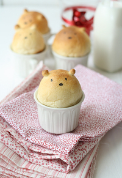
Receta: Pan casero con forma de osito
Descripción: Pan de leche y mantequilla con forma de osito inspirado por esta foto. Si alguien habla japonés y es capaz de traducir la receta, que se manifieste
Preparación: 20 min más tiempo de levado
Cocción: 20 min
Raciones: 16
Valoración 5 sobre 1
Ingredientes
- 300 gr de harina de fuerza
- 1 sobre de levadura de panadería seca (son unos 5 gr)
- 1 cucharada sopera de azúcar
- 1 cucharadita (de café) de sal
- 40 gr de mantequilla a temperatura ambiente
- 1 huevo
- 175 ml de leche a temperatura ambiente
Preparación
- Mezclamos la harina y la levadura en un bol amplio. Agregamos azúcar y sal, e integramos bien.
- Añadimos el huevo, y la leche.
- Mezclamos bien con la ayuda de una cuchara o una rasqueta de panadero
- Sacamos la masa del bol, y comenzamos a amasar. Después de 5 minutos, notaremos como la masa se vuelve cada vez más elástica.
- Agregamos la mantequilla, y amasamos otros 5-10 minutos, hasta que obtengamos una masa suave, plegable, y ligeramente brillante.
- Formamos una bola, y dejamos reposar en un bol ligeramente enharinado, y tapamos con un paño. Tras 1 hora, o 1 hora y media, la masa deberá haber crecido y duplicado su volumen.
- Precalentamos el horno a 200 º C
- Sacamos la masa del bol, y la desgasificamos ligeramente, tocándola y aplatándola con los dedos.
- Cortamos la masa en 16 porciones, y formamos una bola con cada una de ellas, salvo con una que reservamos para las orejitas.
- Colocamos las bolas en una bandeja de horno forrada de papel de hornear y damos forma a las orejas haciendo pequeñas bolitas con la masa sobrante
- Pegamos las orejas con un poco de agua a la bolas que harán de cabeza. Dejamos reposar 15 minutos.
- Horneamos los ositos unos 10-15 minutos, hasta que estén doraditos
- Dejamos enfriar, y con un rotulador comestible, dibujamos los ojos y la nariz. Para servir colocamos sobre tazas, ramequins, etc
Notas
Si no dispones de rotulador comestible, puedes usar tinta de calamar para versiones saladas, o chocolate para versiones dulces. El rotulador comestible puede adquirirse prácticamente en cualquier tienda de repostería. Para personas sensibles, lo mejor es comerse el osito sin mirarlo a la cara. Se coloca en tazas porque la parte inferior no queda totalmente redonda, pero no es imprescindible. Recuerda retirar la taza antes de hincarle el diente. Si es la primera vez que amasas, y quieres ver un vídeo de cómo hacerlo, te recomiendo este con la técnica de Bertinet. Se puede congelar el pan una vez horneado, y descongelarlo calentándolo en el horno, en el microondas unos 30 seg, o a temperatura ambiente.
Receta original: Sara de Sara en la cocina, ha tenido la amabilidad de enviarme un mail con la traducción de la receta original. Os pego a continuación lo que me cuenta
“Con respecto a la receta en japonés, es prácticamente igual, los ingredientes: Harina 200g/Azúcar10g/Sal3g/De agua60g/Leche60g/Mantequilla10g/De levadura seca1.2 cucharaditas. Y la preparación es casi la misma, solo que la leche y el agua las calienta un poco, y cuando hace las bolas y las orejas, las deja levar 15 por separado y luego, las pega, las deja levar otros 15 min tapados con un paño húmedo, luego las hornea igual que tu. y tmb tiene otra versión en la que pinta los ositos con clara de huevo y los espolvorea con copos de avena o coco rayado para para que parezca que tienen pelo” La idea del pelo me encanta, seguro que la pruebo!
Le pregunto a Sara por las orejas de los ositos, si da alguna explicación de cómo lo ha hecho, porque mis osos parecen topos, y me responde lo siguiente: “Creo que es por que coge más masa para las orejitas, hace bolitas, pero más grandes que las tuyas. creo que dice que hace 20 bolas de 1 gramo para las orejas y con el resto hace 10 bolas grandes” Así que ya sabéis, si queréis que vuestros osos parezcan osos y no topitos, orejas más grandes!
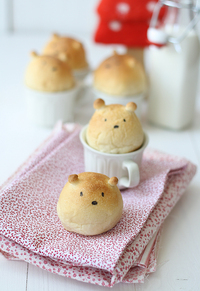
Recipe: Bread bears
Description: Bread shaped into cute bears, inspired by this photo
Ingredients
- 300 g strong wheat flour
- 1 sachet (about 5g) instant dry yeast
- 1 tablespoon sugar
- 1 level teaspoon salt
- 40 g unsalted butter, room temperature
- 1 egg (medium size, about 50 gr)
- 175 ml whole milk
Directions
- Put the flour and yeast in a bowl and combine. Add the sugar and salt
- Pour the egg and milk into the bowl.
- Use a large spoon (or pastry scraper) to mix everything together.
- Take the dough out of the bowl and knead. You will feel the dough become elastic after kneading for about 5 minutes.
- Add the butter and knead the dough for 5-10 minutes or until the dough is soft, pliable, smooth and slightly shiny, almost satiny.
- Put the dough into a lightly floured bowl and cover with a cloth.
- Let the dough rise in a warm place until its size doubles (1 – 1 ½ hour depending on the room temperature).
- Preheat oven to 400º F.
- Take the dough out of the bowl, deflate it by touching lightly.
- Cut the dough into 16 pieces, and roll each of them (excepting one we will use for the ears) into a ball.
- Place them on a paper parchment, and prepare small round ears with the remainig dough
- Stick the ears to each ball with some water, and let the bread bears rest for 15 minutes.
- Bake for about 10-15 minutes, until golden brown
- Let the breads cool, draw the eyes and nose with a black edible writter, and serve inside a mug. Enjoy!
Preparation time: 20 minute(s) plus 1 1/2 hour resting time
Cooking time: 20 minute(s)
Number of servings (yield): 16
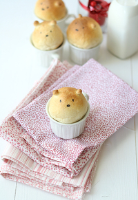
Twix: galletas de chocolate y caramelo
Mon, 24 Oct 2011 06:17:06 +0000
El otro día me quedé pensando en lo del abrefácil, y la verdad es que he descubierto que vivimos rodeados de cosas que no son lo que prometen. Y no estoy hablando de políticos, que no entran dentro de la categoría de “cosas”. Estoy hablando por ejemplo del ordenador. No sé si es que el [...]
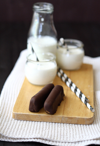
El otro día me quedé pensando en lo del abrefácil, y la verdad es que he descubierto que vivimos rodeados de cosas que no son lo que prometen. Y no estoy hablando de políticos, que no entran dentro de la categoría de “cosas”. Estoy hablando por ejemplo del ordenador. No sé si es que el mío es vaguete, pero yo le digo: “Ordenador, ordena los juguetes de los niños!” y el tío no mueve ni una tecla. “Ordenador, recoge la ropa de la plancha!” Y no hay manera… Y qué me decís del móvil? Con ese nombre, no digo ya ruedas, pero qué menos que unas piernecitas para que venga corriendo cuando te llaman. O para dar saltitos y encontrarlo rápido dentro de esa selva que es mi bolso. Pues nada. El supuesto “móvil” se mueve menos que un presentador del Telediario. Y qué pasa con el reproductor de CD’s? Hay que darle un suplemento de Viagra o algo? Porque yo meto el CD, bajo la luz para crear ambientillo, y no hay manera. Cuando abro, sigue habiendo solo un CD. Qué tipo de reproductor es este? Hay que esperar nueve meses? Con estos reproductores, los CDs están en vías de extinción, os lo digo yo.
Así que aquí os traigo unos Twix que tampoco son los de verdad, pero que están muy ricos. Barritas de chocolate, galleta y caramelo. La receta no puede ser más sencilla. Todos los ingredientes naturales, y fáciles de encontrar. Sin aditivos, ni cosas raras. ¿A qué esperas para preparar tus Twix?
Pero quietoparao, antes de ir a preparar la receta de los Twix, hoy se publica mi foto de este mes en 1080 Fotos de Cocina… huevo, aceite, sal, zumo de limón y una pizca de magia… no te la pierdas!
—————————————————————————————————————————————————————Esta es la última semana para votar, si aún no lo has hecho, en los premios Bitácoras 2011. Si te gusta mi blog, y te apetece votarme, o votar a cualquier otro blog en el apartado de Gastronomía (puede votarse solo una vez por persona, hasta 5 blogs por categoría), solo tienes que pinchar aquí . Gracias a todos los que ya habéis votado para que ocupe el puesto 4 en la quinta clasificación preliminar, y a todos los que os animéis a votar a partir de ahora!(el concurso finaliza el 1 de Noviembre)
—————————————————————————————————————————————————————————
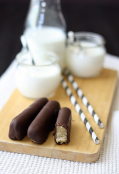
Receta: Twix caseros
Descripción: Receta de Twix caseros: barritas de galleta, chocolate y caramelo. Adaptada de esta receta de Comoju
Preparación: 30 min
Cocción: 30 min
Raciones: 24
Valoración 5 sobre 1
Ingredientes
Para la base de galleta:
- 175 gr. de harina
- 125 gr. de mantequilla fría, cortada en dados
- 4 cucharadas de azúcar (moreno o normal)
- 1/2 cucharadita pequeña de sal
Para la capa de caramelo:
- 55 gr. de mantequilla
- 4 cucharadas de azúcar (moreno o normal)
- 1 bote pequeño de leche condensada (397 gr)
- 1/2 cucharadita pequeña de sal
Para la cobertura de chocolate
- 250 gr. de chocolate negro para fundir.
Preparación
- Necesitaremos un molde rectangular pequeño de los desechables de aluminio. Medidas aproximadas 21 x 15 cm. No es necesario engrasarlo ni enharinarlo.
- Precalentamos el horno a 170 º C
- En un bol amplio, ponemos la harina, la sal, el azúcar y la mantequilla. Lo trabajamos con los dedos, hasta hacer como unas migas.
- Seguimos amasando hasta que podamos formar una bola.
- Extendemos esta masa sobre el molde, presionando bien e intentando que quede lisa (podemos usar un rodillo pequeño para alisarla).
- Pinchamos toda la masa con un tenedor, para que no suba al hornearla.
- Introducimos el molde en el horno, y horneamos unos 20 minutos, hasta que la galleta esté ligeramente dorada.
- Sacamos del horno, y dejamos enfriar dentro del molde.
- Una vez fría la galleta, comenzamos a preparar la cobertura de caramelo.
- Ponemos un cazo al fuego con la mantequilla, la sal, el azúcar y la leche condensada. Removemos sin cesar, hasta que la mezcla comience a hervir.
- Bajamos el fuego y cocemos unos 10 minutos sin dejar de remover, hasta que veamos que la mezcla toma un tono dorado, ha espesado y comienza a separarse de los bordes del cazo.
- Vertemos esta cobertura sobre la base de la galleta que habíamos preparado, y dejamos hasta que enfríe completamente. Si queremos acelerar el proceso de enfriado, podemos introducir en el congelador, así además los cortes del siguiente paso quedarán más limpios.
- Cuando la cobertura de caramelo esté sólida, rompemos el molde de aluminio y sacamos la galleta con el caramelo. Cortamos con un cuchillo barritas del tamaño deseado.
- Si os queréis complicar la vida como yo, para darles una acabo redondeado en la parte superior a las barritas como los Twix originales, nos humedecemos los dedos en un poco de agua, y lo pasamos por los bordes de caramelo, veréis que es muy maleable.
- Troceamos el chocolate, y lo fundimos en el microondas de 30 en 30 segundos, y removiendo de cada vez. En 1,30 o 2 minutos estará fundido para esta cantidad. Dejamos enfriar un poco el chocolate, unos 5 o 10 minutos
- Colocamos las barritas de galleta y caramelo sobre una rejilla, y dejamos caer el chocolate sobre ellas, lentamente, con cuidado de que queden bien cubiertas. Deberemos recoger el chocolate que va cayendo para terminar de cubrir todas las barritas.
- Dejamos que se solidifique el chocolate a temperatura ambiente o en el frigorífico. Una vez seco el chocolate, se conservan durante varios días en un recipiente hermético en el frigorífico, sacándolas 5 min antes de consumir.
Notas
Receta apta para alérgicos al huevo. Si no tenéis el tiempo o la paciencia para hacer barritas, podéis dejar la galleta y el caramelo dentro del molde, y verter el chocolate (en tal caso solo serán necesarios 150 gr) sobre la capa de caramelo, hasta que esté solido. Después se desmolda, y se corta en cuadrados con un cuchillo afilado.
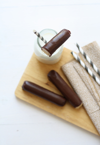
Twix bars
Summary: Homemade Twix bars: chocolate, caramel and cookie bars
Ingredients
Shortbread:
- 175 g (1 1/2 cup) all purpose flour
- 125 g butter (1 stick, 1/2 cup) cold, cut into dices
- 4 tablespoons granulated sugar
- 1/2 teaspoon salt
Caramel:
- 55 g (1/4 cup) butter
- 4 tablespoons granulated sugar
- 1/2 teaspoon salt
- 400 g (1 3/4 cups) sweetened condensed milk
Chocolate coating:
- 250 g (1 1/2 cups) chocolate chips
Directions
- Preheat oven to 350°F.
- In a medium sized bowl, stir together the flour sugar and salt.
- Add the butter
- Mix until a dough forms
- Press the dough into a greased 8″x 6″ rectangle pan (aprox). If you use a disposable aluminium mold it might not be necessary to grease.
- Prick with a fork to avoid puffiness and bake in preheated oven for about 20 minutes or until a golden brown colour develops over the surface.
- Let it cool completely without unmolding it
- Let’s start with the caramel coating.
- In a small saucepan heat sweetened condensed milk, butter, sea salt and sugar. Bring to a boil, stirring constantly.
- When it boils, reduce heat and simmer for about 10 minutes, stirring all the time.
- Pour over the cooled cookie crust still on the mold, and allow to come to room temperature.
- When it is cooled, cut into bars
- Melt the chocolate in a microwave-safe bowl and stir until completely smooth.
- Pour chocolate over the bars or use dipping tools to dip the bars in the melted chocolate, covering them completely.
- Place the dipped bars on a foil-lined tray and repeat until all bars are dipped. Refrigerate the tray to set the chocolate, about 10 minutes.
- Store homemade Twix Bars in an airtight container in the refrigerator for up to a week. These are best when allowed to sit at room temperature for a few minutes before serving, so that the caramel can soften.
Variations
If you don’t have the time or patience to dip individual bars, you can make these into cookie squares instead. Spread the top of the caramel with the melted chocolate (you will probably use less of the chocolate, perhaps two-thirds of the original amount) and refrigerate it until set. Once firm, cut the pan into small squares to serve.
Preparation time: 30 minute(s)
Cooking time: 30 minute(s)
Number of servings (yield): 24 bars
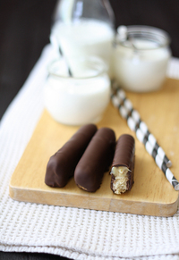
Bizcocho de chocolate y patata
Sun, 09 Oct 2011 10:17:45 +0000
No sé si sabéis que la patata no empezó a consumirse con normalidad en Europa hasta el siglo XVIII porque se consideraba una creación del diablo, por su aspecto, por crecer dentro de la tierra, y porque no aparecía mencionada en la Biblia. Tanto miedo de una pobre patata, y ahora estamos rodeados de inventos [...]
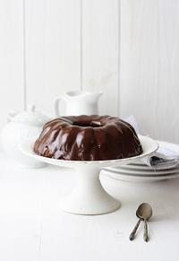
No sé si sabéis que la patata no empezó a consumirse con normalidad en Europa hasta el siglo XVIII porque se consideraba una creación del diablo, por su aspecto, por crecer dentro de la tierra, y porque no aparecía mencionada en la Biblia.
Tanto miedo de una pobre patata, y ahora estamos rodeados de inventos del demonio, pero de verdad. Como el móvil. El otro día me decía una compi: “instálate esto en el Iphone y así puedes hablar gratis con tu marido todo lo que quieras”. Ya le dije: “tú no estás casada, verdad?”. O como el abrefácil. Abrefácil, los cojones! Cada vez que veo la palabrita en un envase, busco las tijeras. Y me imagino al inventor, partiéndose de risa en el suelo. Un señor que cuando emitía gases decía que no era un pedo, sino un “huelebien”.
Después de patentar su abrefácil, este señor se dedicó a diseñar otros envoltorios, como los de los chupachups. Después de luchar montones de veces para despegar el dichoso plastiquito, he decidido que lo mejor es que mis hijos se coman los chupachups con el envoltorio puesto. Total, así les duran más. Y luego no tienen que lavarse los dientes, que tampoco hay ser humano que sea capaz de sacarlos de esos paquetes de plástico en el que los meten. Madre mía, ni que el cepillo de dientes fuera a fugarse en plan Houdini. Y qué decir de las latas de anchoa con abrefácil? Yo si tuviera fortuna me dejaría de caja fuerte, lo metería todo en una lata de esas.
El último invento de este simpático personaje inventor del abrefácil, fueron los sobrecitos de ketchup del McDonalds. Oye, que yo soy blogger gastronómica y nunca como ahí, pero me lo ha contado una amiga. Tu coges el ketchup, y el graciosillo ha puesto: Abrir por aquí. Se le olvidó poner: con los dientes, Rambo. Porque a mano, no hay quien lo abra. Y encima siempre está puesto en la esquina que no es. Lo mismito que los envases de queso rallado: abrir por la línea de puntos. Está bien que lo pongan, pues así ya sabes que por ahí no tienes que abrir. Será tan difícil lograr que un solo envase se abra por donde se supone que tiene que abrir? Son miopes los que pintan la línea de puntos? O familiares del inventor del abrefácil?
En fin, pasemos al invento que nos interesa. La adición de patata cocida al bizcocho, hace que, a pesar de llevar una cantidad relativamente pequeña de materia grasa, obtengamos un bizcocho de chocolate de textura esponjosa y peculiar, al igual que el bizcocho rayado que os traía hace poco. La cobertura de chocolate termina de aportarle sabor a un bizcocho que si no, resultaría quizá un poco soso, pero que así resulta delicioso. Receta adaptada de “Le livre d’or du chocolat”
—————————————————————————————————————————————————————Participo en los premios Bitácoras 2011. Si te gusta mi blog, y te apetece votarme, o votar a cualquier otro blog en el apartado de Gastronomía (puede votarse solo una vez por persona, hasta 5 blogs por categoría), puedes hacerlo a través de este enlace. La semana pasada ocupaba el puesto 5 en el tercer ranking provisional, ojalá podamos acabar en tan buena posición cuando finalice el concurso el 1 de Noviembre. Gracias a todos los que ya habéis votado, y a todos los que lo hagáis a partir de ahora!
—————————————————————————————————————————————————————————
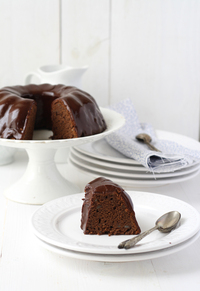
Receta: Bizcocho de chocolate y patata
Descripción: Bizcocho de chocolate preparado con puré de patatas, ideal para aprovechar unos restos de puré.
Preparación: 10 min
Cocción: 30 min
Raciones: 12
Valoración 5 sobre 5
Ingredientes
- 300 gr de harina
- 250 gr de patatas hervidas (no pasa nada si tienen sal)
- 70 gr de cacao puro en polvo.
- 1 cucharadita y media de levadura en polvo tipo Royal
- 150 gr de mantequilla en pomada (blanda, a temperatura ambiente)
- 150 gr de azucar en polvo
- 3 huevos
- 150 ml de leche
- 200 gr de chocolate de cobertura
- 200 ml de nata (18% MG, sirve cualquiera)
- 50 gr de mantequilla
Preparación
- Precalentamos el horno a 180º C y preparamos un molde (de corona en este caso) con spray antiadherente, o engrasándolo con mantequilla y espolvoreando con harina.
- Aplastamos las patatas con un tenedor y reservamos.
- En un bol amplio, batimos la mantequilla con el azúcar, hasta blanquear*. Se puede hacer a mano, pero cansa. Mejor con un batidor de varillas eléctrico o robot de cocina
- Incorporamos los huevos uno a uno y mezclamos bien. Si lo hacemos con batidor eléctrico, a partir de aquí siempre a velocidad baja
- Agregamos el puré de patatas (no pasa nada si queda algún tropezón)
- Agregamos harina, levadura y cacao, alternando con la leche, y mezclamos bien
- Vertemos la preparación en el molde que habíamos preparado anteriormente.Habrá que hacerlo a cucharadas, es una mezcla bastante espesa
- Horneamos 30 min (a 180ºC). Verificamos la coccion con una aguja, al pinchar el bizcocho en el centro debe salir totalmente limpia.
- Sacamos del horno, lo apagamos y dejamos enfriar totalmente sobre una rejilla antes de desmoldar. Desmoldamos, y si la parte inferior del bizcocho ha quedado irregular, lo igualamos cortándolo con un cuchillo longitudinalmente, para obtener una base lisa. Nos comemos unos trocitos de lo que hemos cortado, es obligación del cocinero probar lo que cocina
- Preparamos la cobertura de chocolate
- Para ello, ponemos a hervir la nata.
- Cuando hierva, retiramos del fuego, y agregamos el chocolate troceado y la mantequilla.
- Dejamos reposar unos minutos, y removemos con una cuchara hasta lograr una crema homogénea.
- Dejamos reposar otro ratito, hasta que la crema esté bastante espesa, y la dejamos caer sobre el bizcocho que seguirá colocado encima de una rejilla.
- Dejamos solidificar la cobertura.
Para blanquear no necesitas irte a Suiza, ni recurrir al Wipp Express. Basta con batir a velocidad rápida la mantequilla con el azúcar, hasta que aumente de tamaño y se vuelva blanquecina.
Si notas que el bizcocho te ha quedado con trocitos crujientes, te recomiendo que pruebes a poner los huevos sin cáscara la próxima vez.
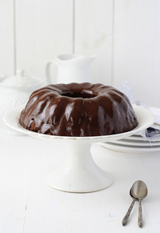
Recipe: Chocolate potato cake
Ingredients
- 1/2 cup unsweetened cocoa powder
- 2 cups flour
- 2 1/2 t. baking powder
- 1/2 cup butter
- 3/4 cup confectioners’ sugar
- 3 large eggs
- 1 cup mashed potatoes
- 1/2 cup milk
- Chocolate frosting, recipe here
Directions
- Preheat oven to 350ºF.
- Butter and flour a 10 inch tube pan.
- Mix flour, cocoa, baking powder and salt in medium bowl.
- Beat butter and sugar in large bowl with mixer at high speed until fluffy.
- Add eggs, one at a time, beating until just blended after each addition.
- With mixer at low speed, gradually beat in potato, followed by the dry ingredients, alternating with the milk.
- Spoon batter into prepared pan.
- Bake until a toothpick inserted into the center comes out clean, about 30 minutes.
- Cool cake in pan. Turn out onto a rack to cool completely.
- Spread top and sides of cake with frosting.
Advice for beginners
If you find crunchy surprises in the cake, please remember to add the eggs without the shells for a next time
Preparation time: 10 minute(s)
Cooking time: 30 minute(s)
Number of servings (yield): 12
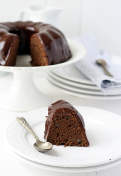
")


")

 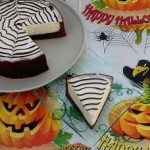
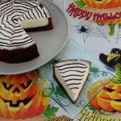 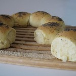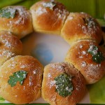
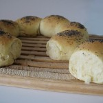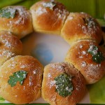